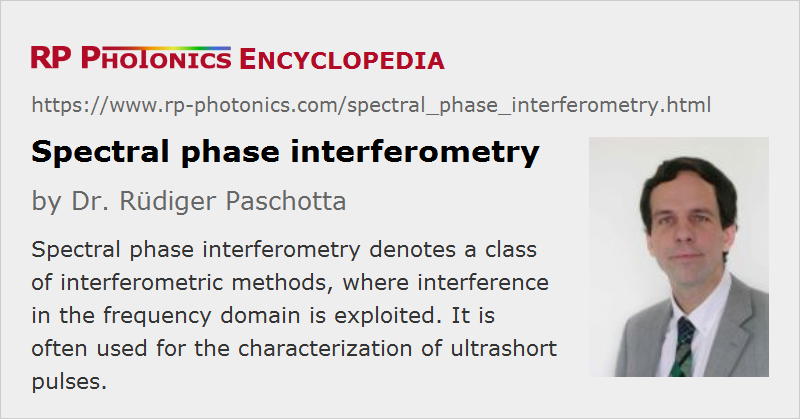

Spectral Phase Interferometry
Definition: a class of interferometric methods for pulse characterization, where interference in the frequency domain is exploited
Alternative term: frequency domain interferometry
German: spektrale Phaseninterferometrie
Categories: light detection and characterization, optical metrology, light pulses, methods
How to cite the article; suggest additional literature
Author: Dr. Rüdiger Paschotta
The intensity profile of the optical spectrum of a signal, such as an ultrashort pulse, can easily be measured using some kind of spectrograph. For the more difficult task of retrieving the spectral phase, more sophisticated methods are required, as explained in this article.
The basic principle of spectral phase interferometry is that two pulses are interferometrically combined, and the optical spectrum of that combination is recorded. An essential detail is that one of the pulses is subject to a time delay τ. If the electric fields of the two pulses are described with phasors E1(ω) and E2(ω), the additional time delay translates into a phase factor exp(−i ω τ) for one of the pulses. Apart from irrelevant prefactors, the combined field is thus
from which one can see that the optical spectrum is modulated (see Figure 1). The oscillating term has a phase
which shows that there is an oscillation determined by the time delay, the phase of which is also influenced by the difference of the spectral phases of the two pulses.
Spectral phase interferometry has some relation to Fourier transform spectroscopy; however, one actually records data in the Fourier domain rather than in the time domain.
Pulse Characterization Using a Reference Pulse
A first method for characterizing a pulse uses a reference phase with a well-characterized spectral phase, which spans the same spectral region. The time delay is chosen such that the period of spectral modulation can be well resolved with the given spectrograph, but is fast enough for an accurate phase determination. The phase of the recorded spectrum can be conveniently and precisely obtained from the spectral intensity curve.
A high sensitivity can be achieved, as such a heterodyne method works well even if the signal pulse energy is much lower than that of the reference pulse. Also, no nonlinear crystal is required, thus avoiding possible bandwidth-limiting effects. Finally, an accurate intensity calibration of the spectrograph is not required, since only the fast modulation of the spectrum is of interest, not the slow variation of intensity. However, the need for a suitable reference pulse is clearly a disadvantage.
Spectral Shearing Interferometry
A convenient way of obtaining a reference pulse can be to send a copy of the signal pulse through a sinusoidally modulated phase modulator at a time close to the zero crossing of the phase. (For example, an electro-optic modulator may be inserted in one arm of a Mach–Zehnder interferometer.) The nearly linear temporal phase modulation then corresponds to some spectral shift of magnitude δω. The spectrum of the combined pulses then has a modulation phase
where the approximate relation holds if δω is not too large. This shows that the spectral derivative of the phase of the signal pulse can be obtained, which is the frequency-dependent group delay.
This method, called spectral shearing interferometry [1, 10, 11], works well for relatively long pulses. For very short pulses, where the group delay variation within a pulse duration is small, it is difficult to obtain a sufficiently large spectral shift in the modulator. A larger spectral shear can be achieved by using a nonlinear interaction, as discussed in the following section.
Spectral Phase Interferometry for Direct Electric-field Reconstruction
Another method of spectral shearing interferometry, often applied for the complete characterization of ultrashort pulses, is called Spectral Phase Interferometry for Direct Electric-field Reconstruction (SPIDER) [4]. Here, the signal pulse is split into two identical copies with a significant temporal distance, so that there is no temporal overlap. Another pulse, derived from the same input pulse, is strongly temporally broadened by sending it through a highly dispersive optical element, such as a long block of glass or a pair of diffraction gratings.
The long chirped pulse and the two copies of the signal pulse are then combined in a nonlinear crystal, where sum frequency generation occurs (see Figure 2). The two signal pulses overlap with different temporal portions of the chirped pulse, which have different optical frequencies, so that there is also a spectral shear between the two upconverted pulses. Therefore, the optical spectrum of the sum frequency signal reveals the temporally resolved group delay in a way which is analogous to that discussed above. From the group delay, it is easy to retrieve the frequency-dependent spectral phase, so that complete pulse characterization is achieved.
In comparison with frequency-resolved optical gating (FROG), the SPIDER method has various advantages and disadvantages:
- SPIDER does not require a sophisticated iterative algorithm for retrieving the spectral phase. Its simple algorithm can be executed very rapidly on a PC, allowing for fast update rates which are limited only by the speed of the spectrograph, even for complicated pulse shapes. However, the FROG algorithm has the advantage of delivering additional consistency checks.
- Both methods can be applied also for very short pulses with durations below 10 fs. FROG then relies on the accurate calibration of the spectrograph in a wide wavelength range, whereas SPIDER requires only precise wavelength calibration, which is simpler to obtain. However, it may anyway be desirable to know the spectrum precisely.
- For long pulses, FROG is more convenient, since SPIDER would require a spectrograph with very high resolution, and an optical element with a huge amount of chromatic dispersion.
- Both methods have variants which allow for single-shot measurements.
A comprehensive comparison of SPIDER and FROG techniques is difficult, because there are many variants of both methods, which have specific advantages under certain circumstances.
Suppliers
The RP Photonics Buyer's Guide contains 6 suppliers for spectral phase interferometry instruments. Among them:
Questions and Comments from Users
Here you can submit questions and comments. As far as they get accepted by the author, they will appear above this paragraph together with the author’s answer. The author will decide on acceptance based on certain criteria. Essentially, the issue must be of sufficiently broad interest.
Please do not enter personal data here; we would otherwise delete it soon. (See also our privacy declaration.) If you wish to receive personal feedback or consultancy from the author, please contact him e.g. via e-mail.
By submitting the information, you give your consent to the potential publication of your inputs on our website according to our rules. (If you later retract your consent, we will delete those inputs.) As your inputs are first reviewed by the author, they may be published with some delay.
Bibliography
| [1] | V. Wong and I. A. Walmsley, “Analysis of ultrashort pulse-shape measurement using linear interferometers”, Opt. Lett. 19 (4), 287 (1994), doi:10.1364/OL.19.000287 |
| [2] | E. Tokunaga et al., “Femtosecond continuum interferometer for transient phase and transmission spectroscopy”, J. Opt. Soc. Am. B 13 (3), 496 (1996), doi:10.1364/JOSAB.13.000496 |
| [3] | C. X. Yu et al., “Direct measurement of self-phase shift due to fiber nonlinearity”, Opt. Lett. 23 (9), 679 (1998), doi:10.1364/OL.23.000679 |
| [4] | C. Iaconis and I. A. Walmsley, “Spectral phase interferometry for direct electric-field reconstruction of ultrashort optical pulses”, Opt. Lett. 23 (10), 792 (1998), doi:10.1364/OL.23.000792 |
| [5] | L. Gallmann et al., “Characterization of sub-6-fs optical pulses with spectral phase interferometry for direct electric-field reconstruction”, Opt. Lett. 24 (18), 1314 (1999), doi:10.1364/OL.24.001314 |
| [6] | L. Gallmann et al., “Techniques for the characterization of sub-10-fs optical pulses: a comparison”, Appl. Phys. B 70, S67 (2000), doi:10.1007/s003400000307 |
| [7] | L. Gallmann et al., “Spatially resolved amplitude and phase characterization of femtosecond optical pulses”, Opt. Lett. 26 (2), 96 (2001), doi:10.1364/OL.26.000096 |
| [8] | C. Dorrer and I. A. Walmsley, “Accuracy criterion for ultrashort pulse characterization techniques: application to spectral phase interferometry for direct electric field reconstruction”, J. Opt. Soc. Am. B 19 (5), 1019 (2002), doi:10.1364/JOSAB.19.001019 |
| [9] | W. Kornelis et al., “Single-shot kilohertz characterization of ultrashort pulses by spectral phase interferometry for direct electric-field reconstruction”, Opt. Lett. 28 (4), 281 (2003), doi:10.1364/OL.28.000281 |
| [10] | C. Dorrer and I. Kang, “Highly sensitive direct characterization of femtosecond pulses by electro-optic spectral shearing interferometry”, Opt. Lett. 28 (6), 477 (2003), doi:10.1364/OL.28.000477 |
| [11] | I. Kang et al., “Implementation of electro-optic spectral shearing interferometry for ultrashort pulse characterization”, Opt. Lett. 28 (22), 2264 (2003), doi:10.1364/OL.28.002264 |
| [12] | A. S. Radunsky et al., “Simplified spectral phase interferometry for direct electric-field reconstruction by using a thick nonlinear crystal”, Opt. Lett. 31 (7), 1008 (2006), doi:10.1364/OL.31.001008 |
| [13] | J. R. Birge et al., “Two-dimensional spectral shearing interferometry for few-cycle pulse characterization”, Opt. Lett. 31 (13), 2063 (2006), doi:10.1364/OL.31.002063 |
| [14] | S. P. Gorza et al., “Spectral shearing interferometry with spatially chirped replicas for measuring ultrashort pulses”, Opt. Express 15 (23), 15168 (2007), doi:10.1364/OE.15.015168 |
| [15] | M. Rhodes et al., “Standards for ultrashort-laser-pulse-measurement techniques and their consideration for self-reference spectral interferometry”, Appl. Opt. 53, D1 (2014), doi:10.1364/AO.53.0000D1 |
| [16] | M. Rhodes et al., “Coherent artifact study of two-dimensional spectral shearing interferometry”, J. Opt. Soc. Am. B 32, 1881 (2015), doi:10.1364/JOSAB.32.001881 |
See also: spectral phase, interferometers, spectrographs, optical heterodyne detection, frequency-resolved optical gating, Fourier transform spectroscopy
and other articles in the categories light detection and characterization, optical metrology, light pulses, methods
|  |
If you like this page, please share the link with your friends and colleagues, e.g. via social media:
These sharing buttons are implemented in a privacy-friendly way!